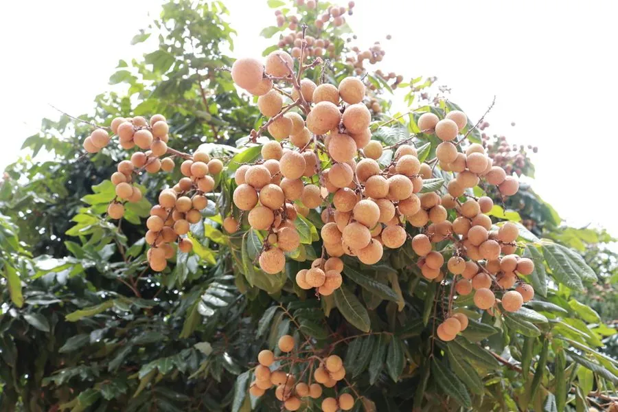

乔木 · 植物界
龙眼 Dimocarpus longan

中国南方著名的热带水果，果肉白色透明、清甜多汁，晒干后即为中药“桂圆”，栽培历史逾两千年。
- 分类
- 门被子植物门纲木兰纲目无患子目科无患子科属龙眼属
- 栖息环境
- 海拔 500 米以下的热带亚热带丘陵山地，喜高温多湿
- 地理分布
- 中国广东、广西、福建、海南等地，越南北部也有分布
- 保护级别
- 暂无评估；中国未列入国家重点保护野生植物名录
物种志
龙眼为常绿乔木，高可达 20 m，树皮灰褐色、粗糙；偶数羽状复叶，小叶 3–6 对，长椭圆形至披针形，革质。花期 3–4 月，圆锥花序顶生或腋生，花小、黄白色；果实为核果，球形，直径 1.5–2.5 cm，果皮薄、黄褐色，果肉白色半透明、清甜多汁，内含黑褐色球形种子。
龙眼原产中国南部及越南北部，广东、广西、福建、海南等地栽培最盛，喜高温多湿、光照充足，适宜深厚肥沃、排水良好的酸性土壤。栽培历史逾两千年，与荔枝并称“南国双珍”；果肉可鲜食，晒干后为“桂圆”，是传统滋补食品，可煲汤、泡茶；果核、根与叶可入药，有安神之效。龙眼木材坚硬，可制家具与农具，花期长也是优良蜜源。龙眼罐头与桂圆干是中国重要的出口农产品。
形态与习性
- 株高可达 20 m，树皮灰褐色粗糙
- 花期3–4 月，花小、黄白色
- 果期7–8 月，果皮黄褐色
- 光照喜光，不耐长期荫蔽
- 水分喜湿润，怕积水
- 土壤深厚肥沃的酸性壤土
- 主要用途鲜食水果、桂圆干滋补、果核根叶入药
趣味知识
- 龙眼晒干后就是中药和滋补食品“桂圆”，可煲汤、泡茶或煮粥。
- 龙眼的果肉白色半透明，包裹着乌黑发亮的圆种子，像龙的眼睛，因此得名。
- 龙眼与荔枝同属无患子科，是中国南方最重要的两种热带水果。
- 中国栽培龙眼已有两千多年历史，广东、广西、福建是主要产区。